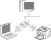
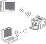
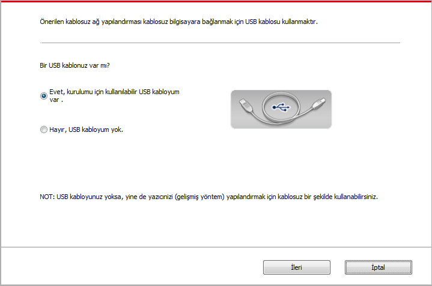
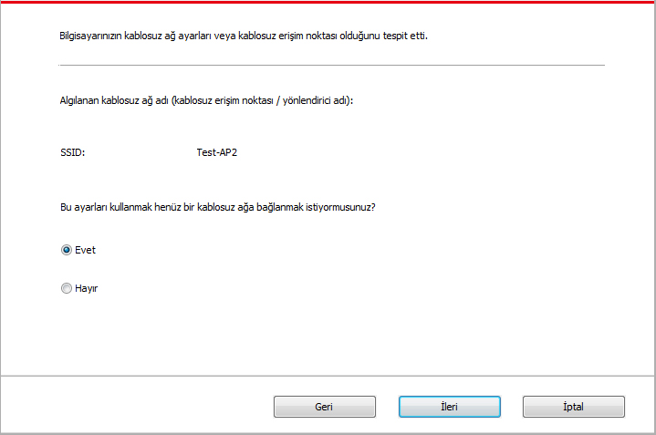
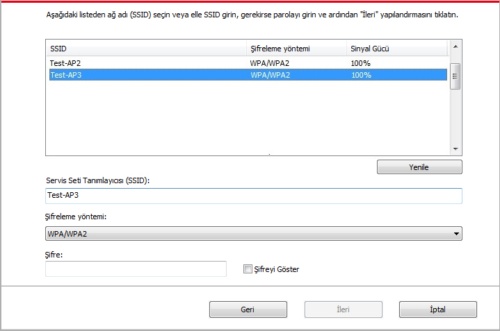
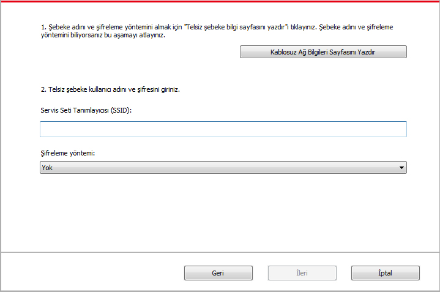
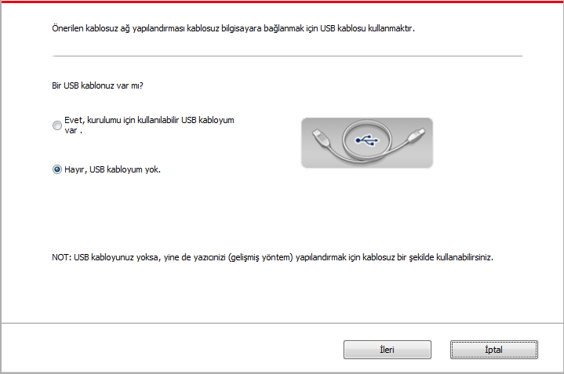
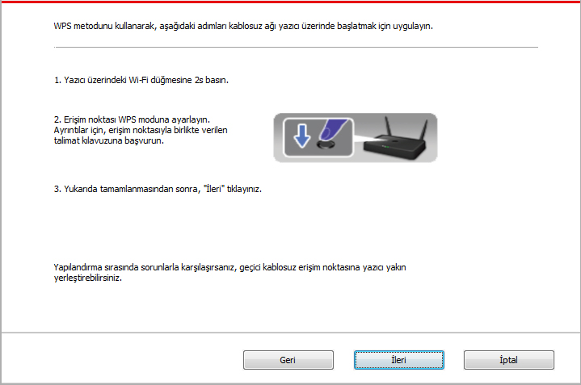
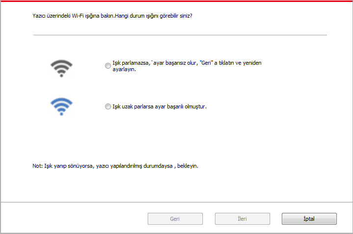

5.(Wi-Fi modeli için) Kablosuz ağ ayarları
Modele bağlı olmak kaydıyla, Wi-Fi yazdırma işlevine sahip yazıcı modeli, temel yapılandırma bağlantısı türü ve Soft-AP olmak üzere iki kablosuz ağ bağlantı türünü destekler. Genellikle, bilgisayar ve yazıcı arasında aynı anda yalnızca bir bağlantı bulunur. Kablosuz ağ ayarları sırasında bir sorun yaşarsanız, kablosuz ağ ayarlarındaki genel sorunlar için Bölüm 5.3' ye bakın.
|  | Altyapı modu: bir kablosuz aygıtla bir yönlendirici üzerinden bağlanma 1. Erişim noktası (kablosuz yönlendirici) 2. Kablosuz ağ yazıcısı 3. Kablosuz erişim noktası üzerinden bağlanan bilgisayar 4. Kablolu ağ erişim noktası üzerinden bağlanan bilgisayar |
|
 |
Soft-AP Kablosuz bilgisayar doğrudan kablosuz ağ aygıtına bağlanır. |
5.1.Altyapı Modu
Erişim noktası (kablosuz yönlendirici) bir aracı olarak kullabailirisniz.Bilgisayar ile yazıcıyı birbirine bağlayın.Erişim noktası (kablosuz yönlendirici) kablosuz ağ yapılandırma araçları ve Wi-Fi Protected Setup (WPS) yapılandırması olarak iki şekilde olacaktır.
Önemli: Bir kablosuz ağ kurulumu başlamadan önce, ağ adı (SSID) ve şifre erişim noktası (kablosuz yönlendirici) bilmeniz gerekir. Kablosuz ağ yapılandırması kullanmak için gereklidir.Eğer emin değilseniz, ağ yöneticisine veya erişim noktası (kablosuz yönlendirici) üreticisine başvurun.
5.1.1.Kablosuz ağ yapılandırma aracı
Bilgisayarınızda sürücü yüklenmiş ve kablosuz iletişim şebekesi üzerinden bağlıysa,ancak kablosuz ağ değişecektir.Kablosuz ağ yeniden yapılandırılması üzerinde aracı yapılandırabilirsiniz.
5.1.1.1.Ön hazırlık
1. Erişim noktası (kablosuz yönlendirici).
2. Bir bilgisayar ağına bağlıdır.
3. Kablosuz ağ yazıcı.
5.1.1.2.Kablosuz ağ yapılandırma aracı yapılandırma yöntemi
1. Bilgisayarda kablosuz ağ yapılandırma aracı ayarlayın.
1) Windows sistemi:Bilgisayarın "Başlat" menüsünden "Tüm Programlar" - "Pantum"- Ürün adı - "Kablosuz ağ yapılandırma aracı"nı seçin.
2) Mac Sistem: Bilgisayarin Finder menü çubuğundan "Git" - "Uygulamalar" - “Pantum” - “Utilities” - “Kablosuz Ağ Yapılandırma Aracı” yi tıklayın.
2. USB bağlama kablosu ile ayarları bağlayın. Aşağıdaki arayüzden, "Evet, bende kullanım için uygun USB kablosu hazır"seçeneği seçerek "İlrei" düğmesine tıklatın.

2.1 Bilgisayar kablosuz ağa bağlanmıştır.
1) Kablosuz ağ yapılandırma aracı, şuanki bilgisayara bağlı kablosuz ağı varsayılan olarak seçecektir. Arayüzde görünen gösterilere göre yapılandırmayı tamamlayın.

 |
Not： |
• Seçtiğiniz ağ adı (SSID) ile bilgisayara bağlanan erişim noktası (kablosuz yönlendirici) ağ adı (SSID) aynı olmalıdır. |
2) Diğer kablosuz ağa bağlamak için "Hayır" seçeneği seçerek diğer kablosuz ağa yapılandırın. Arayüzde görünen gösterilere göre yapılandırmayı tamamlayın.

|
Not： |
• Şu anda, yazıcı destekleyen üç güvenlik modu vardır.Onlar Yok, WEP ve WPA / WPA2 lardır. 1) Yok: Şifreleme kullanılmaz. 2) WEP:güvenlik anahtarı veri iletmek ve almak için WEP(Kablolu Eş Güvenlik) kullanılır. WEP anahtarı 64 ve 128-bit şifrelenmiş ağ kullanılarak, rakam ve harf içerimektedir. 3) WPA / WPA2: Wi-Fi, Erişim Önceden Paylaşılan Anahtar Korumalıdır. O, TKIP veya AES şifreleme (WPA-Personal) kullanarak kablosuz aygıt ile erişim noktasını bağlamaktadır.WPA / WPA2, uzunluğu 8-63 arasındaki karakterlerden oluşan bir önceden paylaşılan anahtarı (PSK) kullanmaktadır. • Şifreyi göster Varsayılan durumda işaretlenmez, eğer işaretlendiğinde, girilen şifre düz metin olarak görüntülenir. |
2.2 Bilgisayar kablosuz ağa bağlanmadı. Aşağıdaki arayüzden, erişim noktasın ( kablosuz yönlendirice) ağ adı SSID (SSID küçük ve büyük olarak ayrılacaktır) ve parolunu girin, arayüzde görünen gösterilere göre yapılandırmayı tamamlayın.

|
Not: |
• Eğer erişim noktası (Kablosuz yönlendirici) n ağ adı (SSID) nı net olarak bilmiyorsanız,"Kablosuz Ağ Bilgileri Sayfasını Yazdır"ı tıkalayarak istediğiniz erişim noktasın (Kablosuz yönlendirici) ağ adı (SSID) nı görebilirsiniz. • Kablosuz ağ yapılandırması tamamlandığında,yazıcı normal olarak çalışmıyorsa,sürücüyü yeniden yükleyin. |
3. WPS kullanarak bağlayın. Aşağıdaki arayüzden, "Hayır, bende USB kablo yok"u seçerek "İleri" ye tıklatın.

1) WPS modunu kullanarak, kablosuz ağ yazıcısı başlayarak aşağıdaki adımları uygulayın. (WPS araç yapılandırması için 5.1.2 Bölüm'e bakın)

2) Yazıcı üzerinde bulunan Wi-Fi gösteri lambasına göre, yazıcının başarı bağlanıp bağlanmadığı kontrol edin. Yapılandırma başarızsa, "Önceki" tıklatıp yeniden yapılandırın;Eğer yapılandırma başarılı ise "Bitti" düğmesine tıklatıp yapılandırmayı tamamlayın.

|
Not: |
• Kablosuz ağ yapılandırması tamamlandığında,yazıcı normal olarak çalışmıyorsa,sürücüyü yeniden yükleyin. |
5.1.2.Wi-Fi Protected Setup (WPS) yapılandırma
Erişim noktası (kablosuz yönlendirici) (WPS), Wi-Fi Protected Setup'i destekliyorsa,yazıcının kontrol panelindeki WPS düğmesine Wi-Fi ve erişim noktası (kablosuz yönlendirici) düğmesine basabilirsiniz,böylece Yazıcıyı kablosuz ağa bağlamış olursunuz.
5.1.2.1.Ön hazırlık
1. Erişim noktası (kablosuz yönlendirici) Wi-Fi Protected Setup (WPS) destekler.
2. Kablosuz ağ yazıcı.
5.1.2.2.Wi-Fi Protected Setup (WPS) yapılandırması
1. Yazıcı ve erişim noktası (kablosuz yönlendirici) güç kaynağı açın.
2. Yazıcının hazır olduğundan emin olun.
|
Not: |
• Eğer yazıcı hazırda bekleme modundaysa,yazıcı kontrol panelin herhangi bir tuşuna basın,yazıcı hemen uyanacaktır. |
3. Yazıcı kontrol panelindeki "Wi-Fi"düğmesine 2 saniyeden fazla bastıktan sonra yazıcı Wi-Fi lambasının mavi lambası yanıp söndükten sonra serbest bırakabilirsiniz
4. 2 Saniye içinde erişim noktasındaki (Kablosuz yönlendirici)üzerindeki WPS düğmesine basın sonra serbest bırakın.
5. Erişim noktası(Kablosuz yönlendirici) ile yazıcı kablosuz bağlantı kurduktan sonra yazıcının Wi-Fi mavi lambası sanıp sönmeye başlar. Bağlanma başarılı olduktan sonra yazıcının Wi-Fi mavi lambası normal yanmaya başlar.
Bağlantı kurmak için en fazla iki dakika sürer,yazıcı hazır durumuna döner,Wi-Fi lambası söner, Wi-Fi Protected Setup (WPS) bağlantısı başarısız olur.Eğer yeniden gerekiyorsa 3-4 arası adımları tekrarlayın.
|
Not: |
• Wi-Fi Protected Setup (WPS) bağlantısı başarılı olduktan sonra, kablosuz ağ modu üzerinden yazdırmak istiyorsanız,Sürücüyü kurun. |
5.1.3.Bağlanan Wi-Fi ağı nasıl kapatılır
Yukarıda bahsedilen adımlara göre genel yapı kablosuz ağ bağlanmayı tamamlayın, bağlanan durum kontrol paneli üzerindeki Wi-Fi lambası normal yanar , bu zaman bu düğmeye 2 saniyeden fazla basarak Wi-Fi bağlantısını kesebilirsiniz (Wi-Fi lambası sönmüş hale gelir ).
5.2.Wi-Fi hot-spot modu
Erişim noktası kullanmadan, kablosuz ağ özelliğine sahip bir bilgisayar ile kablosuz yazıcı arasında bağlantı kurabilirsiniz (kablosuz yöntem).
5.2.1.Ön hazırlık
1. Wi-Fi hot-spot işlevi olan yazıcı.
2. Kablosuz ağ işlevi olan bilgisayar.
5.2.2.Wi-Fi Hotspot Bağlantısı
Yazıcıyı bağlamadan önce yazıcının Wi-Fi-Hot özelliğini etkinleştirin. Bu amaçla yerleşik web sunucusunda oturum açın, bağlantının durumunu "Etkin" olarak ayarlamak için."Ayarlar" - "Kablosuz Ayarı" - "Wireless Hot"a basın.
5.2.3. Wi-Fi Erişim Noktası Yapılandırması
Yazıcının kablosuz ağ erişim noktası etkin olduğunda, kullanıcı arama yaparak doğrudan buna bağlanabilir. Kablosuz ağ erişim noktası varsayılan olarak etkindir ve varsayılan şifre “12345678” şeklindedir. Yazıcıya özel SSID ve şifre, Wi-Fi Yapılandırmasını Yazdır öğesi seçilerek yazdırılabilecek olan Wi-Fi Yapılandırma Bilgileri Sayfasından edinilebilir. Bağlantı kurulduktan sonra yapılandırma, Web yapılandırma yöntemine uygun şekilde tamamlanabilir.
5.3.Genellikle karşılaşılan kablosuz ağ kurulumu sorunları
1. Yazıcı Bulunamadı
• Bilgisayar, erişim noktası (kablosuz yönlendirici) veya yazıcı açık.
• Bilgisayar ile yazıcı arasındaki USB kablosu varmı.
• Yazıcı Wi-Fi destekliyormu.
2. Bir ağ bağlantı süresinde Ağ adını (SSID) nı bulamıyoru
• Erişim noktası (kablosuz yönlendirici) güç anahtarı açık olup olmadığını.
• Yazıcı istediğiniz erişim noktası (kablosuz yönlendirici)'ın ağ adı (SSID)'nı bulamıyor, erişim noktasın ağ adını (SSID) kontrol edin ve yeniden bağlayın.
• Erişim noktası (kablosuz yönlendirici) yapılandırma değişiklikleri meydana geldiğinde,yazıcının kablosuz ağını sıfırlamanız gerekir.
3. Bağlantı başarısız
• Erişim noktası (kablosuz yönlendirici) ve yazıcının güvenlik modunu olup olmadığını,şifrenin doğru olup olmadığını kontrol edin.
• Yazıcının etrafındaki kablosuz resepsiyon kontrol edin.Eğer yönlendirici yazıcıdan uzakta olursa yada ortada bir engel varsa, alınan sinyal etkilenebilir.
• Erişim noktası (kablosuz yönlendirici) ve yazıcıyı kapatın ve sonra yeniden yapılandırın.
4. Eğer bir ağ üzerinde yazıcıyı kullanırken sorun yaşarsanız aşağıdaki yönlerini kontrol edin:
• Güvenlik duvarı yazılımın iletişime engelli olup olmadığını kontrol edin.Bilgisayar ve yazıcı aynı ağa bağlıysa, ancak arama yapamazsa,bu güvenlik duvarı yazılımın iletişime engelli olduğu anlamına gelecektir.Güvenlik duvarı yazılımın Kullanıcı Kılavuzu'na bakın, duvarı devre dışı bırakın ve sonra tekrar yazıcıya aramak için deneyin.
• Yazıcı IP adresi atamasın doğru olup olmadığını kontrol edin.IP adresini kontrol etmek için yazıcının ağ yapılandırma sayfası yazdırabilirsiniz.
• Yazıcının ve bilgisayarın aynı ağda olup olmadığını kontrol etmek için lütfen aşağıdaki adımları izleyin.
1) Aşağıda gösterildiği gibi "Komut istemi" ni seçin
a. Windows 8/10 sistemi: Başlat Menüsünde "Ara" düğmesini seçin ve arama çubuğunda "Komut istemi" girin, ardından klavyede "Enter" düğmesine basın.
b. Windows 7 / Vista / XP sistemi: "Başlat" menüsü- "Tüm Programlar - "Donatılar" - "Komut istemi" tıklayın.
2) Açılan pencerede ping ve yazıcınızın IP adresini yazın ve "Enter" düğmesine basın.
Örneğin: ping XXX.XXX.XXX.XXX (“XXX.XXX.XXX.XXX” yazıcı IP adresidir)
3) Pencerede RTT görünmüyorsa, yazıcı kablosuz ağını yeniden yapılandırmak için lütfen Bölüm 5'e bakın.
|
Not: |
• Erişim noktasına ile ilgili (kablosuz yönlendirici) bilgiler için, Kullanım kılavuzuna ya da üreticisine başvurun. |